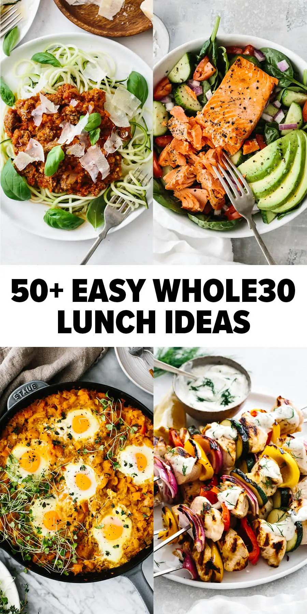
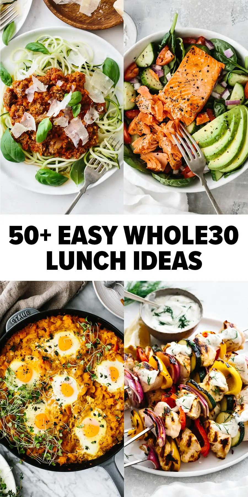

click on pages to switch pages

 

Ingredients: Flour, eggs, milk, sugar, butter, baking powder, vanilla extract.
Recipe: Mix dry and wet ingredients. Cook on a hot griddle until golden brown. Serve with syrup and butter.
Ingredients: Eggs, milk, butter, salt, pepper.
Recipe: Whisk eggs with milk, salt, and pepper. Cook in a pan with butter, stirring occasionally.
Ingredients: Oats, milk or water, honey, cinnamon, fruit (optional).
Recipe: Cook oats with milk or water. Top with honey, cinnamon, and fruit.
Ingredients: Avocado, bread, olive oil, lemon, salt, pepper.
Recipe: Toast bread. Mash avocado with lemon, salt, and pepper. Spread on toast and drizzle with olive oil.
Ingredients: Frozen fruit, milk or yogurt, granola, nuts, honey.
Recipe: Blend frozen fruit and milk or yogurt. Top with granola, nuts, and honey.
Ingredients: Greek yogurt, granola, honey, fruit.
Recipe: Layer yogurt with granola and top with honey and fruit.
Ingredients: Eggs, cheese, spinach, peppers, onion, salt, pepper.
Recipe: Whisk eggs and mix with veggies and cheese. Bake in muffin tins at 350°F (175°C) for 20 minutes.
Ingredients: Tortilla, eggs, cheese, salsa, avocado, bacon or sausage (optional).
Recipe: Scramble eggs and assemble in a tortilla with cheese, salsa, avocado, and meat. Roll up and serve.
Ingredients: Chia seeds, milk, honey, vanilla extract, fruit.
Recipe: Mix chia seeds with milk, honey, and vanilla. Let sit overnight. Top with fruit.
Ingredients: Bread, eggs, milk, cinnamon, vanilla, butter, syrup.
Recipe: Dip bread in egg mixture and cook in buttered pan until golden. Serve with syrup.
Ingredients: Bagel, cream cheese, smoked salmon (optional), capers.
Recipe: Toast bagel and spread with cream cheese. Add smoked salmon and capers if desired.
Ingredients: Flour, butter, sugar, cinnamon, yeast, milk, eggs.
Recipe: Make dough and roll with cinnamon sugar. Bake at 375°F (190°C) for 20 minutes. Glaze with icing.
Ingredients: Pancakes, eggs, bacon or sausage, cheese, maple syrup.
Recipe: Stack pancakes with scrambled eggs, bacon, and cheese. Drizzle with syrup.
Ingredients: Mixed fruits (berries, melon, banana, etc.), honey, mint leaves.
Recipe: Cut fruits into bite-size pieces and mix. Drizzle with honey and garnish with mint.
Ingredients: Tortilla, scrambled eggs, cheese, salsa, avocado, sour cream.
Recipe: Fill tortilla with eggs, cheese, and salsa. Fold and cook until crispy. Serve with avocado and sour cream.
Ingredients: Oats, milk, yogurt, nuts, dried fruit, honey.
Recipe: Soak oats in milk and yogurt overnight. Top with nuts, dried fruit, and honey.
Ingredients: Avocado, milk, honey, ice cubes.
Recipe: Blend avocado with milk, honey, and ice. Serve chilled.
Ingredients: Pizza dough, scrambled eggs, cheese, bacon, vegetables.
Recipe: Roll out dough, top with scrambled eggs, cheese, bacon, and veggies. Bake at 400°F (200°C) for 10-12 minutes.
Ingredients: Cottage cheese, fresh fruit, honey.
Recipe: Top cottage cheese with fresh fruit and a drizzle of honey.
Ingredients: Bread, peanut butter, banana, honey.
Recipe: Toast bread and spread with peanut butter. Top with sliced banana and drizzle with honey.
Ingredients: Eggs, cheese, ham, spinach, mushrooms.
Recipe: Whisk eggs and cook in a pan. Add fillings and cook until set. Fold and serve.
Ingredients: Eggs, tortillas, cheese, salsa, avocado, bacon or sausage.
Recipe: Scramble eggs and assemble in tortillas with cheese, salsa, and avocado.
Ingredients: Bread, almond or peanut butter, fruit.
Recipe: Toast bread and spread with nut butter. Top with fresh fruit.
Ingredients: Eggs, tomatoes, onions, garlic, spices (paprika, cumin), olive oil.
Recipe: Cook onions, garlic, and spices. Add tomatoes and simmer. Crack eggs into the mixture and cook until set.
Ingredients: Quinoa, apple, cinnamon, honey, almond milk.
Recipe: Cook quinoa with almond milk and cinnamon. Top with sautéed apple and honey.
Ingredients: Croissant, egg, cheese, ham or bacon (optional).
Recipe: Scramble egg and fill croissant with cheese and egg. Add ham or bacon if desired.
Ingredients: Eggs, sausage, bread, cheese, milk, seasonings.
Recipe: Layer bread, sausage, and cheese. Pour egg mixture over and bake at 350°F (175°C) for 30 minutes.
Ingredients: Mango, yogurt, honey, ice.
Recipe: Blend mango, yogurt, honey, and ice until smooth.